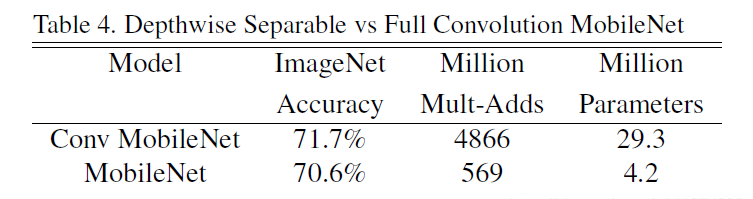
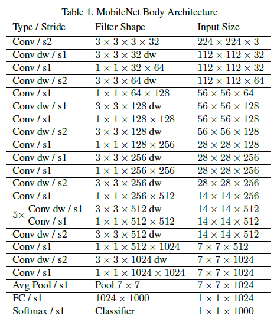

Abstract
MobileNet 是用于移动和嵌入式视觉应用的高效模型。基于一种流线型（streamlined）的架构，该架构使用深度可分离卷积（depthwise separable convolutions）来构建轻量级深度神经网络。同时引入两个简单的全局超参数，在延迟和准确率之间进行了有效的权衡。这些超参数允许模型构建者根据问题的约束为其应用程序选择适当大小的模型。论文在资源和精度权衡方面进行了大量的实验，并与其他流行的 ImageNet 分类模型对比显示了的强大性能。然后，论文在广泛的应用和用例中论证了移动网络的有效性，包括目标检测、细粒度分类、人脸属性和大规模地理定位。
Introduction
深度卷积神经网络在计算机视觉中变得无处不在，为了获得更高的精度而使网络更加深更复杂。然而，这些提高准确性的进步并不一定使网络在规模和速度方面更有效。在许多现实世界的应用中，如机器人、自动驾驶汽车和增强现实，识别任务需要在一个计算有限的平台上及时执行。
本文描述了使用一种高效的网络架构和一组两个超参数（宽度和分辨率）来构建非常小、低延迟的模型，这模型可以轻松满足移动和嵌入式视觉应用的设计要求。
Prior Work
在最近的文献中，构建小而高效的神经网络方法通常有两种：压缩预训练网络和直接训练小型网络。
MobileNet Architecture
在本节中，首先描述构建 MobileNet 的核心层深度可分离卷积。然后描述 MobileNet 的网络结构，并对宽度乘法器和分辨率乘法器这两个模型超参数进行了描述。
Depthwise Separable Convolution
MobileNet 是基于深度可分离卷积构建的网络，它是将标准卷积拆分为了两个操作：深度卷积（depthwise convolution）和 逐点卷积（pointwise convolution）。
深度卷积和标准卷积不同，对于标准卷积而言其卷积核是用在所有的输入通道上（input channels），而深度卷积将卷积核拆分成为单通道形式，针对每个输入通道采用不同的卷积核，就是说一个卷积核对应一个输入通道，对每一通道进行卷积操作，这样就得到了和输入特征图通道数一致的输出特征图。而逐点卷积就是普通的卷积，只不过其采用 1x1 的卷积核，主要作用就是对特征图进行升维和降维。
这么做的好处就是可以大幅度降低参数量和计算量，但是能达到和标准卷积差不多的效果。

- F 为输入特征图；DF 为输入的宽度和高度；M 为输入通道数
- K 为卷积核；DK 为卷积核的维度
- G 为输出特征图； DG 为输出的宽度和高度；N为输出通道数
假设步长（stride）为 1 且填充（padding），这时候卷积前后的尺寸不变（DG=DF）
标准卷积
- 卷积核的尺寸是 Dk×Dk×M，一共有N个，所以标准卷积的参数量（params）是：DK x DK x M x N
- 输出特征图大小为 DF x DF，一共要做 DF x DF 次乘加运算，所以标准卷积的计算量是：DK x DK x M x N x DF x DF
深度可分离卷积
- 深度卷积的卷积核尺寸 Dk×Dk×1，一共 M 个；逐点卷积的卷积核尺寸为 1×1×M，一共有 N 个，所以深度可分离卷积的参数量是：DK x DK x M + M x N
- 深度卷积和逐点卷积得到的输出特征图大小都是 DF x DF，各做 DF x DF 次乘运算，所以深度可分离卷积的计算量是：DK x DK x M x DF x DF + M x N x DF x DF
可以减少如下的计算量:
（DK x DK x M x DF x DF + M x N x DF x DF）/（DK x DK x M x N x DF x DF）= 1 / N + 1 / DK^2
MobileNet 使用 3 × 3 深度可分离卷积，它比标准卷积的计算量少 8 到 9 倍，而精度只有 1% 很小的降低。

Network Structure and Training
下图左边是标准卷积层，右边是 MobileNet 的卷积层。首先使用 3×3 的深度卷积提取特征，接着是一个 BN（Batch Normalization，批量标准化）层，随后是一个 ReLU（非线性激活函数，这里使用的是 ReLU6） 层，在之后就会 1x1 逐点卷积，最后就是 BN 和 ReLU 了。这也很符合深度可分离卷积，将左边的标准卷积拆分成右边的一个深度卷积加一个逐点卷积。
MobileNetV1 的具体结构如下:

- Conv：标准卷积
- s2：卷积步长 stride 为 2
- dw：深度卷积
- Avg Pool：平均池化
- FC：全连接层
- 将深度卷积和逐点卷积看做两层，共 28 层网络
MobileNet 模型结构将几乎所有的计算都放到密集的 1×1 卷积中。这可以通过高度优化的通用矩阵乘法（GEMM）函数来实现。通常卷积是由 GEMM 实现的，但需要在内存中进行初始的重新排序称为 im2col，以便将其映射到 GEMM。例如，这种方法在流行的 Caffe 包中使用。1×1 卷积不需要在内存中重新排序，可以直接用 GEMM 实现，GEMM 是最优化的数值线性代数算法之一。MobileNet 在 1 × 1 的卷积中花费了 95% 的计算时间，也占有 75% 的参数，几乎所有的附加参数都在全连接层中。
Width Multiplier: Thinner Models
虽然基本的 MobileNe t架构已经很小并且延迟很低，但是很多时候特定的用例或应用程序可能需要模型更小更快。为了构建这些更小、计算成本更低的模型，论文引入了一个非常简单的参数 α，称为宽度乘数。宽度乘数 α 的作用是在每一层均匀地细化网络。
对于给定的层和宽度乘数 α，输入通道数 M 变为 αM，输出通道数 N 变为 αN。具有宽度乘数 α 的深度可分卷积的计算量为：DK x DK x αM x DF x DF + αM x αN x DF x DF
其中 α∈(0，1]，通常设置为 1、0.75、0.5 和 0.25
Resolution Multiplier: Reduced Representation
降低神经网络计算量的第二个超参数是分辨率乘数 ρ，将此方法应用到输入图像中，每一层的内部表示都由相同的乘法器减少。在实践中，可以通过设置输入分辨率隐式地设置 ρ 值。深度可分离的卷积计算量为：DK x DK x M x ρDF x ρDF + M x N x ρDF x ρDF
其中 ρ ∈ ( 0，1]，通常设置输入分辨率为 224 , 192 , 160 和 128
用宽度乘子 α 和分辨率乘子 ρ 来表示网络核心层的计算代价为深度可分离的卷积：DK x DK x αM x ρDF x ρDF + αM x αN x ρDF x ρDF
此时看下计算量对比：
（DK x DK x αM x ρDF x ρDF + αM x αN x ρDF x ρDF）/ （DK x DK x M x N x DF x DF）= αρ / N + (αρ / DK)^2
下面例子是标准卷积和 MobileNet 深度可分离卷积及带有超参数的模型计算量和参数量对比，其中 DK= 3, M = 512, N = 512, DF= 14。
Conclusion
论文提出了一种基于深度可分离卷积的新模型 MobileNet，同时提出了两个超参数用于快速调节模型适配到特定环境，来构建更小、更快的网络。实验部分将 MobileNet 与许多先进模型做对比，展现出 MobileNet 的在尺寸、速度、准确性上的优越性。最后，论文证明了 MobileNet 在广泛应用于各种任务时的有效性。